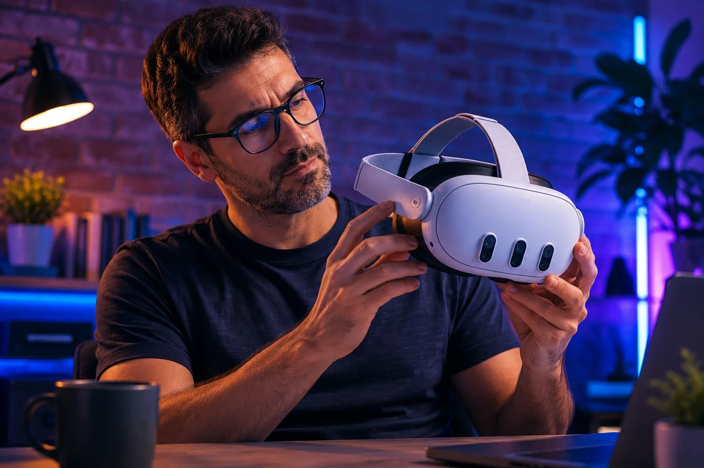

Using VR with glasses: can you wear a Quest 3?

Short answer, so you can stop worrying and read on for the good part: yes. A Quest 3 fits average glasses, and it has eye-relief buttons that push the lenses farther from your face to make room. Nobody has to skip VR because they wear glasses. But "you can" and "you should" aren't the same thing, and for most people there's a better answer than jamming your glasses under the headset.
Start with a question almost nobody asks first: do you even need your glasses in VR? This matters because a headset focuses its image at a distance — optically, about a metre and a half away — so it's your distance prescription that counts, not your reading one. If you're nearsighted or have astigmatism, you'll want correction to see VR sharply. But if the only glasses you own are readers — the drugstore kind for books and your phone, or prescription reading glasses — you very likely need nothing at all in VR, because there's no close-up to correct. A lot of people brace for a problem they don't have. So before you buy anything, try the headset with your eyes as they are; you may be done already.
If you do need correction, wearing your regular glasses works — it's just the weakest of the three options. The frames press against your nose and temples under the headset, which gets uncomfortable fast and can bring on a headache; they fog up when you warm up; they shift while you hunt for the clear spot; and — the one that actually costs money — your glasses and the headset's delicate pancake lenses can scratch each other. Use the eye-relief buttons to buy some room, and smaller frames help. For the occasional seated session, it's fine. Just be careful about that scratching, which is a real way to ruin the lenses (we get into caring for them in the lens guide).
The genuinely better solution is prescription inserts: custom lenses, made to your distance prescription, that snap over the headset's own lenses. They fix everything glasses get wrong. Nothing presses on your face, the field of view stays wide, an optional anti-fog coating keeps them clear during workouts, and — a quiet bonus — they double as a protective shield over the pancake lenses. They pop out, too, so several people can share one headset each with their own pair. Prices run from budget snap-ins around $20 (usually nearsighted-only, something like -1 to -6) up to Meta's official Zenni lenses or specialists like Reloptix in the $40–80 range, which handle strong prescriptions, astigmatism, and even progressives — for those, you just enter your distance numbers and ignore the reading ("ADD") value. One catch: Quest 3 and Quest 3S inserts aren't interchangeable, so pick the pair made for your headset. If you use VR regularly and need correction, this is the upgrade to make.
And if you wear contact lenses, you've got the easiest path of all: pop them in like any other day, put on the headset, and go.
Two fit tips that help everyone, glasses or not: take a moment to set the IPD — the distance between the lenses — to match your eyes, which sharpens the image and eases strain, and use those eye-relief buttons to dial in how close the optics sit. Small adjustments, real difference.
The honest verdict: glasses are no reason to avoid VR. Check first whether you even need correction — readers usually don't. If you're nearsighted or astigmatic and you're in the headset often, prescription inserts are clearly the best move: more comfortable, a wider view, and a shield for the headset's pricey lenses, all at once. An occasional user? Your own glasses or contacts will do fine. Not sure the Quest 3 is your headset in the first place? The quiz can sort that out.
Answer 7 quick questions and get a personalized match in 60 seconds.
Take the VR Finder quiz →This guide is general information, not optical or medical advice. Prices and specifications are subject to change. See our Privacy Policy.